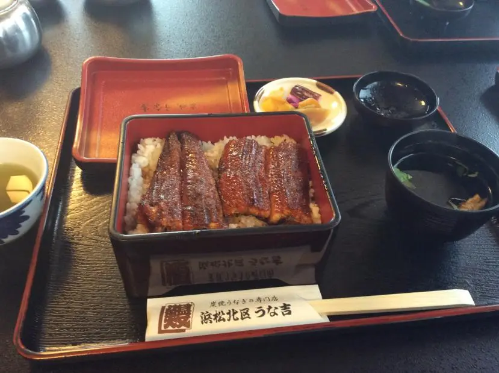

タイトルの通り。写真もね

理由は他に色々な機能を追加したいからです
ですが、ポイント機能は一応ファイルでは取っておくつもりです
hitokuchi mailを使えば登録している人同士で簡易的なメールのやり取りが出来ます
プレリリース段階ですがぜひ使ってみてください！
hitokuchi mail に移動
ついに不具合や多少の機能の追加をして本バージョンがリリースされました！
ちなみに「basic」というのは、「premium」とかを作るかもしれないからです
hitokuchi review を使えばサイトの評価やコメント、宣伝が出来ます！
hitokuchi review に移動
これからもよろしくおねがいします！
技術的なことや日々の知恵など何でも書いて投稿・共有することが出来ます
hitokuchi note に移動